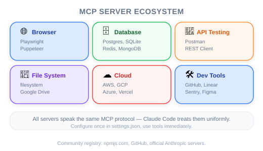
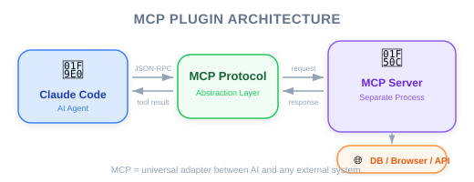

| Item | Detail |
|---|---|
| Exam Domain | D2 — Tool Use & Integration (18%) |
| Task Statements | 2.4 ★★★ (MCP integration), 2.1 ★★ (tool interfaces), 2.3 ★★ (tool distribution) |
| Source | claude-code-in-action / 04-integrations / Lesson 12 |
MCP (Model Context Protocol) servers are Claude Code's extensibility mechanism — they add new tools without modifying the core, following the same plugin architecture pattern as VS Code extensions or Chrome DevTools Protocol.
MCP servers run either remotely or locally on your machine. They expose tools that Claude Code can discover and invoke at runtime.
Diagram produced by nanobanana
Key insight: MCP servers extend Claude's capabilities without modifying Claude Code itself. This is the plugin pattern — the same philosophy behind VS Code extensions, Webpack plugins, or Kubernetes operators.
| Technology | MCP Server Equivalent | Why It Fits |
|---|---|---|
| VS Code extensions | MCP servers | Add capabilities without forking the editor |
| Express middleware | MCP tool handlers | Process requests through a standardized interface |
| Chrome DevTools Protocol | Playwright MCP | Control a browser programmatically |
| Kubernetes operators | MCP servers | Extend platform capabilities via a standard API |
| npm packages | MCP server packages | Install via CLI, configure, use |
The Playwright MCP server is the canonical example from the course. Install it from your terminal (not inside Claude Code):
claude mcp add playwright npx @playwright/mcp@latest
This command does two things:
1. Names the MCP server playwright
2. Registers the startup command (npx @playwright/mcp@latest) that runs locally
💡 Key detail
claude mcp addis run in your terminal, not inside a Claude Code session. This registers the server in your project's MCP configuration.
When Claude first uses an MCP tool, it asks for permission each time. To pre-approve all tools from a server, edit .claude/settings.local.json:
{
"permissions": {
"allow": ["mcp__playwright"],
"deny": []
}
}
⚠️ Double underscores
The format is
mcp__<server_name>— note the two underscores. This is a frequently tested detail.
The allow array accepts glob-like patterns:
- mcp__playwright — allow all tools from the Playwright server
- mcp__playwright__browser_click — allow only a specific tool
🎯 Exam note
The exam tests the trade-off between blanket
mcp__<server>allows (convenient but less secure) vs. individual tool permissions (verbose but follows least-privilege). In CI/CD contexts, explicit per-tool permissions are required — there is no shortcut (covered in Unit 13).
The course demonstrates a powerful use case — using Playwright to create a visual feedback loop for UI component generation:
localhost:3000@src/lib/prompts/generation.tsx🎬 Instructor insight from the video
The instructor was genuinely surprised by the quality improvement. The key advantage is that Claude can see the actual visual output, not just the code. This closes the feedback loop between code generation and visual evaluation — something that was previously only possible with human review.

Playwright is just one example. The ecosystem includes servers for:
| Category | Examples | Use Case |
|---|---|---|
| Browser automation | Playwright | Visual testing, UI interaction |
| Database | SQLite, PostgreSQL | Query and inspect data |
| API testing | REST clients | Test endpoints programmatically |
| File system | Extended file ops | Advanced file manipulation |
| Cloud services | AWS, GCP integrations | Manage infrastructure |
| Development tools | Linters, formatters | Automated code quality |

MCP servers embody the Architecture > Prompt exam philosophy:
| Approach | Example | Reliability |
|---|---|---|
| Prompt: "Please check the browser" | Tell Claude to verify visually | Unreliable — Claude cannot actually see |
| Architecture: Playwright MCP | Give Claude browser tools | Reliable — Claude can interact with real UI |
| Prompt: "Query the database" | Hope Claude has access | Fails if no DB tool exists |
| Architecture: DB MCP server | Provide actual DB tools | Works — Claude has real database access |
💡 Decision rule
When the exam asks about extending Claude Code's capabilities, the answer is almost always MCP server (architectural extension) over prompt instruction (hoping Claude can do something it structurally cannot).
| Anti-Pattern | Why It Is Wrong | Correct Approach |
|---|---|---|
| Installing MCP inside a Claude Code session | Must be done from terminal | Use claude mcp add in your shell |
Using mcp_playwright (single underscore) |
Wrong naming convention | Use mcp__playwright (double underscore) |
| Allowing all MCP tools in CI/CD | Security risk, violates least-privilege | List each tool explicitly in allowed_tools |
| Relying on prompts for capabilities Claude lacks | Cannot do what it has no tools for | Add an MCP server that provides the capability |
You are building a web application and want Claude Code to be able to visually verify UI changes. Which approach is most effective?
Your team uses Claude Code to generate React components. The generated components consistently have poor styling. What is the best approach to improve quality?
A developer adds the Playwright MCP server to their project. They want to allow all Playwright tools without permission prompts during local development. Which configuration in .claude/settings.local.json is correct?
"allow": ["playwright"]"allow": ["mcp_playwright"]"allow": ["mcp__playwright"]"allow": ["mcp__playwright__*"]